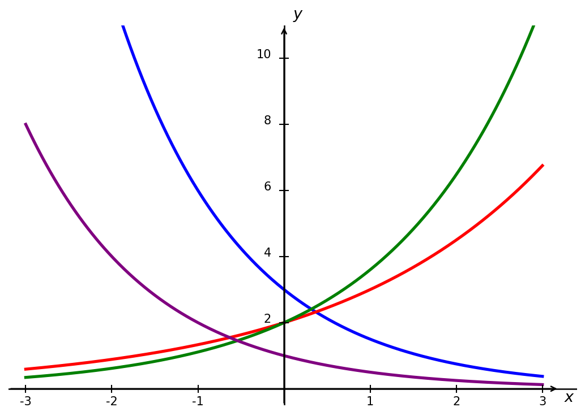
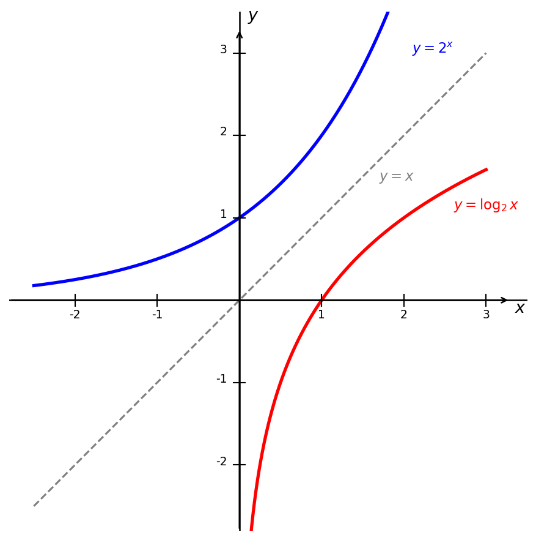
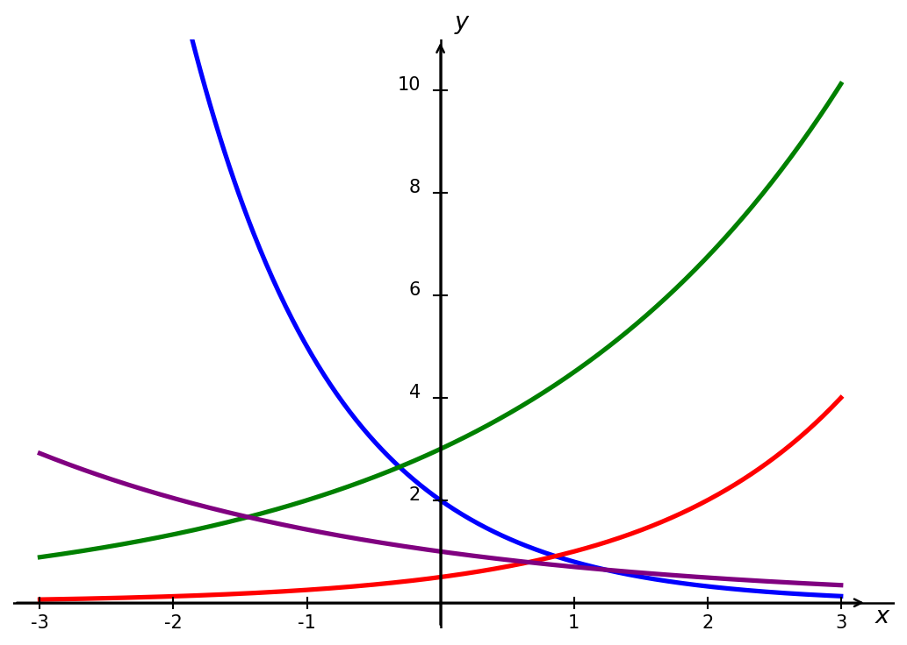

4. Exponents and Logarithms
4.1 Review of Exponents
Properties of Exponents
All variables represent real numbers. And assume all variables in the denominator are non-zero.
- \(x^a\cdot x^b = x^{a+b}\)
- \(\frac{x^a}{x^b} = x^{a-b}\)
- \((x^a)^b = x^{ab}\)
- \((xy)^a = x^ay^a\)
- \(\left(\frac{x}{y}\right)^a = \frac{x^a}{y^a}\)
- \(x^0 = 1\), provided \(x \neq 0\)
- \(x^{-a} = \frac{1}{x^a}\), provided \(x \neq 0\)
- \(x^{1/n} = \sqrt[n]{x}\), provided \(x \neq 0\)
Example 1
Simplify \(x^3 \cdot x^5\).
Solution
When multiplying expressions with the same base we add the exponents,
Example 2
Simplify \(\dfrac{x^6 y^3}{x^2 y}\).
Solution
When dividing expressions with the same base we subtract the exponents,
Example 3
Simplify \(\left(\dfrac{2x^3}{y^2}\right)^4\).
Solution
Apply the exponent to each factor inside the parentheses,
Example 4
Simplify \(\dfrac{(3x^2 y)^3}{9x^4 y^{-2}}\).
Solution
First expand the numerator,
Now divide,
4.2 Exponential Functions
Suppose a population of bunnies starts off with 2 bunnies and every month the population doubles. We can create a table illustrating the growth,
| Month | No. of Bunnies |
|---|---|
| 0 | 2 |
| 1 | 4 |
| 2 | 8 |
| 3 | 16 |
This type of growth is known as exponential growth. The plot is shown below.
The function above has the form \(y = 2\cdot2^x\). In general, exponential functions have the form
where \(a\) is the initial value and \(b\) is the growth/decay factor. We will always assume \(b > 0\). If \(b > 1\), the function represents exponential growth and looks like the graph above. If \(0 < b < 1\), the function represents exponential decay. Below is a graph of the function \(y = (1/2)^x\),
Many real life processes are modeled by exponential growth and decay. Below are a few common examples.
Example 5
India’s population was 1.14 billion in the year 2008 and is growing by about 1.34% each year. Write an exponential function for India’s population, and use it to predict the population in 2020.
Solution
In this problem we are given the growth rate as a percentage. We must convert this to a multiplier to use the about function formula. Note that
where \(r\) is the growth rate as a decimal. Thus \(b = 1 + 0.0134 = 1.0134\) and the population (in billions) is given by the function
where \(t\) is the number of year since 2008. Thus the estimated population in 2020 is,
Example 6
A savings account has an annual interest rate of 3.45% compounded monthly. If Julia deposits $500 how much money will she have after 2 years.
Solution
There are a few key phrases we should understand here. Firstly, the interest is compounded monthly, meaning our times should be the number of months that have passed. Secondly, we are given an annual interest rate, so to convert this to a monthy rate we need to divide by 12. Thus,
And we have the function,
Plugging in \(t = 24\) (2 years = 24 months) we get,
Example 7
A car purchased for \(\$28{,}000\) depreciates at a rate of 15% per year.
(a) Write an exponential function modeling the value of the car after \(t\) years.
(b) Find the value of the car after 5 years.
Solution
a) If we are given a decay rate, like above, then
where \(r\) is the decay rate (as a decimal again). Since the car loses 15% of its value each year, then \(b = 0.85\). The value after \(t\) years is,
b) After 5 years,
Example 8
Bismuth-210 is an isotope that radioactively decays by about 13% each day, meaning 13% of the remaining Bismuth-210 transforms into another atom (polonium-210 in this case) each day. If you begin with 100 mg of Bismuth-210, how much remains after one week?
Solution
We can write a function to represent the decay,
where \(t\) is in days. After a week we have,
4.2.1 Euler's Number
Let's consider a similar set up to Example 6. Suppose we deposit \(D\) dollars into an account with an annual interest rate \(r\). In Example 6 we considered interest compounded monthy, but here let's consider interest compounded over different length of time. For interest compounded \(n\) times the amount of money in the account after \(t\) years is,
Let's see what happens to the multiplier \(\left(1+\frac{r}{n}\right)^n\) as \(n\) increases, e.g. interest is compounded more frequently.
| \(n\) | \(\left(1 + \frac{1}{n}\right)^n\) |
|---|---|
| \(1\) | \(2\) |
| \(5\) | \(2.48832\) |
| \(10\) | \(2.59374\) |
| \(25\) | \(2.66584\) |
| \(50\) | \(2.69159\) |
| \(100\) | \(2.70481\) |
| \(1{,}000\) | \(2.71692\) |
| \(10{,}000\) | \(2.71815\) |
| \(20{,}000\) | \(2.71821\) |
| \(50{,}000\) | \(2.71826\) |
Notice that as \(n\) increase, the multiplier seems to be approaching \(\approx 2.718\). The precise number is a transcendental number called Euler's number. We use the symbol \(e\) to denote Euler's number and, as shown above,
Sometimes calculators and computer programs use the notation \(\exp(x) = e^x\). We say a function represents continuous (exponential) growth if it has the form,
where \(a\) is the initial condition and \(r\) is the continuous growth rate (as a decimal), which is typically given as a percent per time interval (e.g. day, month, year).
Example 9
Radon-222 decays at a continuous rate of 17.3% per day. How much will 100mg of Radon-222 decay to in 3 days?
Solution
When dealing with decay the continuous growth rate is negative. In this case the amount of Radon-222 is modeled by the function,
where \(t\) is in days, since the continuous growth rate is written as "per day." After 3 days we get,
4.2.2 Graphs of Exponential Functions
When sketching the graph of an exponential function \(f(x) = a\cdot b^x\), it is helpful to remember the graph passes through the points \((0,a)\) and \((1,ab)\). If \(a > 0\), then the function has the following long run behavior:
- If \(b > 1\), as \(x \to \infty\), \(f(x) \to \infty\) and as \(x \to -\infty\), \(f(x) \to 0\).
- If \(0 < b < 1\), as \(x \to \infty\), \(f(x) \to 0\) and as \(x \to -\infty\), \(f(x) \to \infty\).
Example 10
Match each equation to the correct graph,
- \(f(x) = 3(0.5)^x\)
- \(g(x) = 2(1.5)^x\)
- \(h(x) = 2(1.8)^x\)
- \(k(x) = 1(0.5)^x\)

Solution
The key to matching is to look at two things: the y-intercept and whether the function is growing or decaying.
- \(f(x) = 3(0.5)^x\) — y-intercept of \(3\), decaying. This is the blue curve.
- \(g(x) = 2(1.5)^x\) — y-intercept of \(2\), growing but slowly. This is the red curve.
- \(h(x) = 2(1.8)^x\) — y-intercept of \(2\), growing faster than \(g\). This is the green curve.
- \(k(x) = 1(0.5)^x\) — y-intercept of \(1\), decaying. This is the purple curve.
Note that \(f\) and \(k\) both decay at the same rate since they share the same base, but \(f\) starts higher because its y-intercept is \(3\) rather than \(1\). Similarly, \(g\) and \(h\) both grow but \(h\) grows faster since \(1.8 > 1.5\).
Exponential growth functions grow faster than ALL polynomial functions. This can be hard to see with a graph, since these functions get large very fast. A table can help us observe this fact though,
| \(x\) | \(e^x\) | \(x^2 + 1\) | \(x^3 + 1\) | \(x^{10} + 1\) |
|---|---|---|---|---|
| \(1\) | \(2.718\) | \(2\) | \(2\) | \(2\) |
| \(5\) | \(148.413\) | \(26\) | \(126\) | \(9{,}765{,}626\) |
| \(10\) | \(22{,}026\) | \(101\) | \(1{,}001\) | \(10{,}000{,}000{,}001\) |
| \(20\) | \(485{,}165{,}195\) | \(401\) | \(8{,}001\) | \(\approx 1.024 \times 10^{13}\) |
| \(50\) | \(\approx 5.185 \times 10^{21}\) | \(2{,}501\) | \(125{,}001\) | \(\approx 9.766 \times 10^{16}\) |
| \(100\) | \(\approx 2.688 \times 10^{43}\) | \(10{,}001\) | \(1{,}000{,}001\) | \(\approx 10^{20}\) |
Notice that for smaller values of \(x\), e.g. \(x = 5, \, 10\), the function \(y = x^{10} + 1\) is actually much larger than \(y = e^x\). However, \(y = e^x\) eventually catches up and passes \(y = x^{10} + 1\) for good.
Scientific Notation
When working with very large or very small numbers it is convenient to use scientific notation. A number is written in scientific notation as
where \(1 \leq a < 10\) and \(n\) is an integer. For example,
A positive exponent moves the decimal point to the right, and a negative exponent moves it to the left. The exponent tells you how many places the decimal point has moved.
4.3 Logarithmic Functions
The logarithm with base \(b\), \(\log_b(x)\), is the inverse of the exponential function, \(b^x\). This means the statement \(b^x = y\) is equivalent to the statement \(\log_b(y) = x\). We will only consider \(b > 0\). We can only compute the logarithm of positive numbers, this is equivalent to the fact that the \(b^x > 0\) (\(b > 0\)).
Example 11
Without using a calculator, compute \(\log_2(16)\).
Solution
Say \(\log_2(16) = x\), then it must also be true that \(2^x = 16\). Observing that \(16=2^4\), we determine that \(x=4\).
Example 12
Without using a calculator, compute \(\log_3(81)\).
Solution
Say \(\log_3(81) = x\), then it must also be true that \(3^x = 81\). Observing that \(81 = 3^4\), we determine that \(x = 4\).
Since logarithms and exponentials are inverse function we can graph the logarithm function \(f(x) = \log_b(x)\) by flipping the function \(g(x) = b^x\) across the line \(y = x\).

We should notice that:
- \(\log_b(1) = 0\).
- The logarithm function has a vertical asymptote at \(x = 0\).
- As \(x\to\infty\), \(\log_b(x) \to \infty\).
The last point may not be obvious from the graph of the logarithm. This is because exponential functions grow very slowly, in fact, they grow slower than lines.
The natural logarithm is the logarithm with base \(e\). Typically the notation \(ln(x)\) is used to denote the natural logarithm. a logarithm with no indicated base, \(\log(x)\), means different things to different people:
- A lot of sources will tell you \(\log(x)\) means the logarithm base 10. This is true for engineers, chemists, and many calculators.
- Mathematicians use \(\log(x)\) to mean the natural logarithm.
- Computer scientists use \(\log(x)\) to mean the logarithm base 2.
If context is not clear, you should be careful as to which logarithm is being used. Logarithms of different bases can be related with a simple transformation:
Some other important properties of logarithms are:
- \(\log_b (x^t) = t \log_b(x)\)
- \(\log_b(xy) = \log_b(x) + \log_b(y)\)
- \(\log_b(x/y) = \log_b(x) - \log_b(y)\)
Logarithms are useful when solving for unknowns in exponential equations.
Example 13
In Example 7, we determined that the value of a car after \(t\) years was given by,
After how many years will the car only be worth $10,000?
Solution
We wish to solve for \(t\), where
First, we want to isolate the exponential
Next, take the log base 0.85 of both sides
Since logarithms and exponential are inverse, the right side simplifies,
Using a calculator we get, \(t \approx 6.3378\) years.
Example 14
A population of bacteria grows continuously at a rate of 8% per hour. The initial population is 1,000 bacteria. How long will it take for the population to reach 5,000 bacteria?
Solution
Using the continuous growth model,
we have \(a = 1000\) and \(r = 0.08\). We want to find \(t\) such that \(P(t) = 5000\),
Divide both sides by \(1000\),
Take the natural log of both sides,
Using the property \(\ln(e^x) = x\),
Solve for \(t\),
Exercises
4.1 Exercises
Simplify the following expressions using the properties of exponents. The simplified form should have no negative exponents.
-
Problem 1.
\(\dfrac{x^5}{x^{-2}}\)
-
Problem 2.
\((3x^{-2} y^3)^2\)
-
Problem 3.
\(\dfrac{x^3 y^{-2}}{x^{-1} y^3}\)
-
Problem 4.
\(\left(\dfrac{2x^{-1} y^2}{z^3}\right)^{-2}\)
-
Problem 5.
\(\dfrac{(3x^2 y)^3}{9x^{-1} y^4}\)
-
Problem 6.
\(\left(\dfrac{x^3 y^{-1}}{x^{-2} y^2}\right)^3\)
-
Problem 7.
\(\dfrac{(2x y^{-2})^3 \cdot x^{-1}}{4x^2 y}\)
-
Problem 8.
\(\left(\dfrac{4x^{-2} y^3}{2x y^{-1}}\right)^{-2}\)
4.2 Exercises
Problem 9. Match each equation to the correct graph.
- \(f(x) = 2(0.4)^x\)
- \(g(x) = 0.5(2)^x\)
- \(h(x) = 3(1.5)^x\)
- \(k(x) = 1(0.7)^x\)

Sketch a graph of the following exponential functions. Label the y-intercept and state whether the function is growing or decaying.
-
Problem 10.
\(f(x) = 2^x\)
-
Problem 11.
\(f(x) = 3(0.5)^x\)
-
Problem 12.
\(f(x) = -2(1.4)^x\)
-
Problem 13.
\(f(x) = 4e^x\)
Problem 14. A town has a population of \(8{,}000\) people and is growing at a rate of \(4\%\) per year. Write an exponential function modeling the population after \(t\) years. What will the population be after \(10\) years?
Problem 15. A laptop purchased for \(\$1{,}200\) loses \(20\%\) of its value each year. Write an exponential function modeling the value of the laptop after \(t\) years. What is it worth after \(3\) years?
Problem 16. A bacteria culture starts with \(500\) bacteria and doubles every \(4\) hours. Write an exponential function modeling the number of bacteria after \(t\) hours. How many bacteria are present after \(12\) hours?
Problem 17. A city had a population of \(50{,}000\) in 2010 and grew continuously at a rate of \(3\%\) per year. Find the population in 2020.
Problem 18. A radioactive substance decays continuously at a rate of \(5\%\) per year. A sample initially contains \(200\) grams. How much of the substance remains after \(6\) years?
Determine whether the following statements are true or false. Briefly justify your answer.
-
Problem 19.
As \(x \to \infty\), \(e^x \to \infty\).
-
Problem 20.
The function \(f(x) = 3(0.8)^x\) is negative for negative values of \(x\).
-
Problem 21.
As \(x \to \infty\), \(e^x > x^5\) for all \(x\).
-
Problem 22.
All exponential functions of the form \(f(x) = ab^x\) pass through the point \((0, a)\).
4.3 Exercises
Answer the following questions without the use of a calculator or graphing utility.
Problem 23. Compute \(\log_2 (8)\).
Problem 24. Compute \(\log_3 (27)\).
Problem 25. What is the domain of the function \(y = \ln (x)\).
Problem 26. Which is greater: \(\log_3 (10)\) or \(\log_5(10)\)?
Determine whether the following statements are true or false. Briefly justify your answer.
-
Problem 27.
As \(x \to \infty\), \(\log_{10}(x) \to \infty\).
-
Problem 28.
\(f(x) = \ln(x)\) has a horizontal asymptote at \(x = 0\).
-
Problem 29.
The graph of \(y=\log_2(x)\) is always concave down.
-
Problem 30.
\(\log_b(b) = 1\) for all \(b > 0\).
Problem 31. A city had a population of \(120{,}000\) in 2015 and grows continuously at a rate of \(2.5\%\) per year. In what year will the population reach \(200{,}000\)?
Problem 32. A car purchased for \(\$35{,}000\) depreciates at a continuous rate of \(12\%\) per year. How long until the car is worth \(\$15{,}000\)?
Problem 33. A social media account has \(500\) followers and gains followers continuously at a rate of \(15\%\) per month. How many months until the account reaches \(10{,}000\) followers?
Problem 34. A radioactive substance has a continuous decay rate of \(3\%\) per year. A lab starts with \(800\) grams of the substance. How long until only \(100\) grams remain?